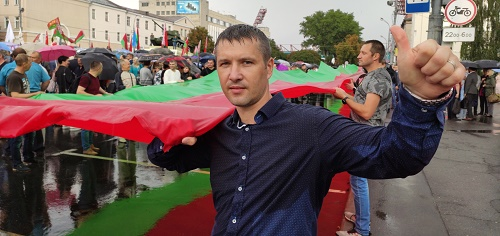
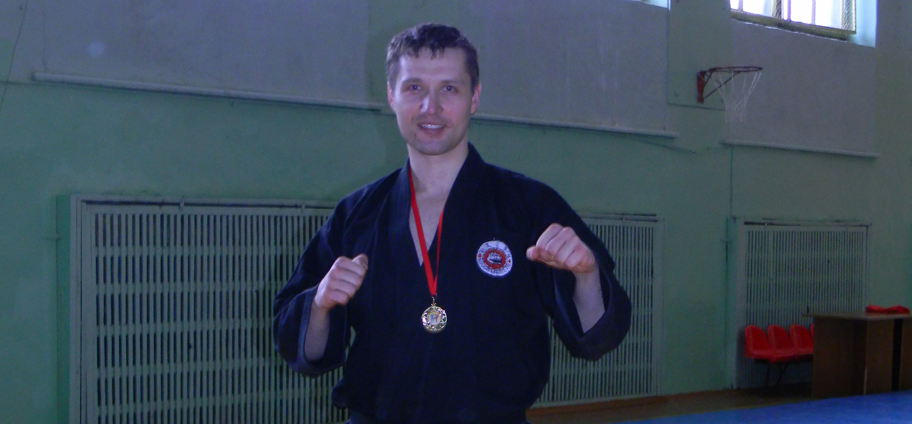
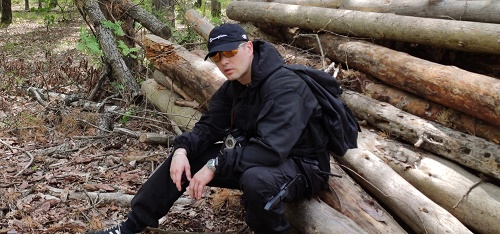

Rescuer.by
Плавин Руслан Сергеевич

Плавин Руслан Сергеевич родился в 1978 году. С детства начал заниматься спортом. Всегда привлекали единоборства, такие как САМБО, дзюдо, рукопашный бой. В юности хотел стать пожарным, так как жил рядом с одной из пожарных частей города Гомеля, видел как оттачивают своё мастерство пожарные, что и послужило толчком в выборе профессии. Помощь людям попавшим в беду…
Ещё информация
В жизни всегда есть место для спорта

Помимо спортивных достижений, спорт дал уверенность в жизни, отличное здоровье и настоящих верных друзей. Всегда относился к тренировочному процессу с серьёзностью и полной отдачей сил…
Ещё информация
Всегда интересная работа

Поисково-спасательные работы всегда были особенным направлением деятельности, которая требовала хорошей функциональной подготовки, ведь порой приходилось искать потерявшихся людей по несколько суток подряд, проходя по лесистой, болотистой местности по несколько десятков километров за день. Благодаря службе в МЧС люди становятся сильнее и выносливей, как в физическом так и в эмоциональном плане…
Ещё информация